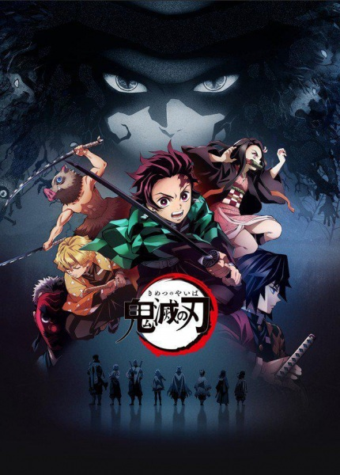
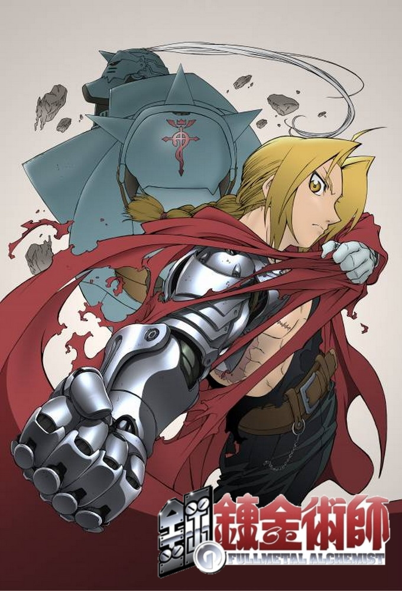
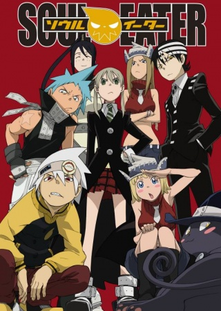

Совет для просмотра
Лучше всего при просмотре аниме иметь с собой большие запасы вредной еды, времени и как по мне смотреть в одиночку.
Что нам для этого надо:
- Вредная еда
- Свободное время
- Тишина и спокойствие
Аниме
Аниме́ — японская мультипликация. В отличие от мультфильмов других стран, предназначенных в основном для просмотра детьми, бо́льшая часть выпускаемого аниме рассчитана на подростковую и взрослую аудитории, и во многом за счёт этого имеет высокую популярность в мире. Аниме отличается характерной манерой отрисовки персонажей и фонов. Издаётся в форме телевизионных сериалов, а также фильмов, распространяемых на видеоносителях или предназначенных для кинопоказа. Сюжеты могут описывать множество персонажей, отличаться разнообразием мест и эпох, жанров и стилей.
Список аниме
Наруто

Ничто не остается как прежде – видоизменяется. История начинается с битвы, сражение, которое никто не мог ожидать – на деревню напал зловещий демон – девятихвостый Лис – кьюби. Конечно, жители деревни справились, но ценой жизни правителя, что заточил монстра в теле младенца. Ребенок вырос, стал непоседой. Имя ему – Наруто Узумаки . Мальчик вот-вот закончил академию ниндзя, теперь, ему предстоит идти до самого победного конца, чтобы осуществить заветную мечту, о которой Наруто грезит всю жизнь – стать Хокагэ – вождем деревни, что скрыта в листве. Много соперников встретит юнец, но это путь ниндзя! Путь Узумаки! Путь настоящего Хокагэ!
Атака титанов

В прошлом столетии человечество страдало из-за нашествия гигантов. Они были очень похожи внешностью на простых людей, но также имели несколько отличий. Разница состояла в слишком больших размерах созданий и в их абсолютной глупости. Действовали великаны, как зомби из банальных фильмов ужасов. Они не могли похвастаться разумом и полностью соответствовали своему первобытному инстинкту, связанному с выживанием. Поэтому эти существа неустанно пожирали беззащитное население, совершенно не чувствуя к нему сожаления. Под натиском воцарившегося безумия, жители планеты начали постепенно вымирать. Те, кому повезло остаться в живых, приняли решение объединиться и приступить к самозащите.
Народ вскоре построил высокие стены, которые отличались поразительной прочностью. Практически целый век люди спокойно существовали и даже начали забывать о беспощадных врагах. Страх наконец-то сменился умиротворением. Эрен давно желает вступить в группу разведчиков, ведь он полагает, что противники могут вернуться и проломить заграждение. И вскоре его опасения подтверждаются. Сможет ли юный герой справиться с могущественными соперниками?
Клинок, рассекающий демонов
Эпоха «Тайсё» была полна неожиданностей. Много легенд нашли свое логическое подтверждение в те года. Люди давненько стали думать о присутствии демонов в гущах леса. И эти существа были крайне опасны и кровожадны. В ночное время суток они вели охоту на людей, убивая невинных граждан, демоны питались их плотью. Однако со временем эти легенды стали больше напоминать сказки. Подобных инцидентов в лесах не происходило, люди перестали верить. И было это зря, ведь несколько лет назад с отцом главного героя – Танджиро Камадо случилась неприятность.
Тот пропал при странных обстоятельствах, а юноша взвалил на себя ответственность за семью. Когда Танджиро отправился продавать уголь, он не думал, что при возвращении домой застанет кровавую картину. Его родственники были убиты. Семья растерзана, и везде по дому виднеются следы крови. Единственный человек оставшийся в живых – сестренка главного героя. Она рассказала о демонах пришедших из леса в их дом. Оказалось, что девушка была ими обращена и скоро может стать убийцей. Герою истории нужно следить за поведением сестры и мстить за смерть матери и младшего братика.
Стальной алхимик
Пожиратель душ
Богу Смерти постоянно приходится делать непростой и трудный выбор. Оказывается, что ему вечно нужны помощники, и он старается сделать всё возможное, пытаясь исправить собственное положение. Он проводит конкурс, где лучшим участникам предоставляется возможность поучаствовать за главный приз. Им является Коса Смерти. Награда действительно достойная, но заполучить её невероятно трудно. Любая ошибка может привести к ужасным последствиям, что прекрасно понимают все, кто решается рискнуть.
Участвуют две категории студентов, где одни обладают магическими способностями, а остальные их напарники-мастера. Все работают в парах, и им приходится делать всё возможное, пытаясь исправлять собственное положение. В центре внимания оказываются трое героем. Они все талантливые ребята, но победителем окажется один. Все это понимают и не собираются так легко сдаваться от намеченной награды. Кто выйдет победителем и сможет с гордость носить это важное звание? Предсказать исход невозможно и нужно просто верить в удачу.